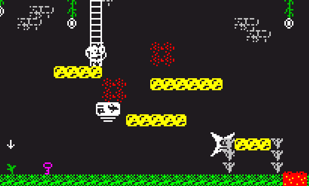
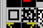
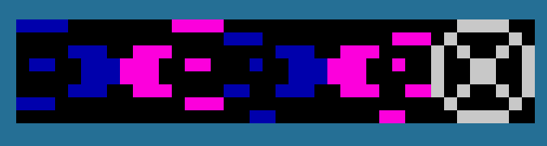

Configuraciones generales
Aquí se incluye información de parámetros que no existen (en el momento de elaborar esto) en el proyecto original
Configuración original a tener en cuenta
Ten en cuenta la configuración original antes de continuar aquí.
Configuración general en atributos del mapa (tiled)
Configuración del módo de tratamiento de gráficos
Con el parámetro graphicsModeUnshifted indicas al motor cómo debe tratar los gráficos al compilar y ejecutar tu juego.
- Desactivado (preshifted sprites) el rendimiento del renderizado de objetos en pantalla mejorará a costa de perder espacio para funcionalidades.
- Activado ganarás mucho más espacio para activar funcionalidades pero bajando el rendimiento en el renderizado.
Es el developer el que debe valorar activar/desactivar esta opción en función de sus necesidades
Opciones genéricas
- transpasableItems esto indica al motor cuántos tiles traspasables quieres tener disponible en la zona dedicada.
Hay que tener en cuenta que ahora los 2 primeros tiles (de momento) se usarán para las escaleras diagonales.
-
borderDamageColor valor numérico que si es distinto al atributo border hará que el borde se ponga de este color al recibir daño
-
dropTile configura aquí un id de tile (puedes consultarlo pinchando en un tile en Tiled) para que al morir los enemigos, en algunas ocasiones, liberen un item o pinten tiles. Si el id indicado corresponde con un item reservado del juego (llaves, items, balas, etc...) liberará sólo 1, de lo contrario pintará 4 (por ejemplo: si haces un tile de sangre, parecerá que el enemigo ha sido reventado contra el fondo)
NOTA: Sólo se soltarán drops si no hay ningún tile configurado en la zona de drop

-
checkpointsEnabled permite revivir a tu personaje (en modo vidas) desde el último item de bandera (en tiles a la izquierda de la bala) por el que haya pasado el player
-
shouldPickUpItems habilita la posibilidad de que los bloques de enemigos (los que desaparecen al matar todos los enemigos) se quiten también al coger un item en pantalla. Puede usarse de manera independiente.
-
playerReadyConfirmation permite al desarrollador usar la parte que no visible de la imagen del HUD (hud.scr) como mensaje de inicio de nueva vida entre muertes (requiere modo graveyard de vidas). Lo que hace es esperar antes de empezar tras morir a que el usuario pulse disparo o enter (según configures adventureTextsAcceptWithFire). En esa pantalla puedes meter información adicional como ayuda contextual, un mensaje de ánimo, etc etc... muy útil si quieres meter una pausa entre muertes para el player.
-
fullChangeScreenAnimation con esta opción cambias el modo en el que se repintan las nuevas pantallas. Desactivado pintará el cambio de pantalla sobre la pantalla anterior haciéndo más rápido el cambio y parece una transición Activado limpia primero la pantalla y luego la nueva
-
screenAttributes habilita la configuración de parámetros por pantalla (ver Screen attributes)
Tiles desvanecidos (fade tiles)
Con esto podrás activar la funcionalidad de los fade tiles que son aqueloos que al pisarlos se rompen con el tiempo. Si activas esta funcionalidad el tile 32 (más del 33% de energía) y 33 (menos del 33% de energía) quedan reservados para
-
fadeTilesInScreenMax indica cuántos fade tiles pueden haber en una pantalla (0 para desactivar)
-
fadeTilesFramesCount es el número de fotogramas que tienen que pasar para que se desvanezca. Cuando quede un 33% de esta cantidad el tile cambiará.

Comportamiento del personaje
- laddersEnabled activando esta opción harás que el personaje suba escaleras (tiles transpasables) usando una animación de subir. La velocidad de subida será más lenta simulando la subida de escaleras. No afecta a la velocidad de bajada.
La animación de subir usa el sprite usado para el mainCharacterExtraFrame por lo que se dicha opción se deshabilitará si se activa esta.
-
livesEnergy añade energía a tu personaje para que la muerte no sea tan traumática
-
livesDeadBackgroundColor cambia el color del escenario cuando mueres (sólo en modo vidas con tumba "show graveyard")
-
gravityLow configura el entorno con una gravedad más baja haciendo que el personaje flote
Configuración de salto
-
jumpDouble permite tener un doble salto tras el primero (salto+suelto+salto) o un salto más largo (salto+no soltar)
-
jumpWall habilita el poder saltar apoyado contra una pared
-
jumpCancelAllowed esto permite al jugador cancelar el salto a la mitad pulsando "abajo"
Plataformas controlables
- platformMoveable habilita la opción de tener plataformas controladas por el jugador.
Una vez activado, si configuras una plataforma móvil con los siguientes parámetros podrá ser controlada por el player al subirse encima pero no será capaz de moverse entre pantallas.
Los parámetros son velocidad normal o 3 y sin desplazamiento horizontal o vertical.
Una vez el jugador se sitúe encima de la plataforma ésta caerá mientras que el jugador no pulse dirección abajo.
Para salir de la plataforma se deberá de saltar y quedará inmóvil.
Animación de la bala
-
bulletAnimation habilita la animación de la bala (sólo en modo side)
-
bulletDisableCollisions permite que la bala de nuestro personaje atraviese paredes (esta opción deshabilita los bloques rompibles)
-
bulletType te permite poder seleccionar entre 2 tipos de disparo para tú personaje: bullet (clásico) o boomerang
Para modo bullet, para editar la animación se debe usar bullet_animated.zxp siguiendo estas sencillas instrucciones

- Las balas en azul corresponden a la animación de dirección derecha
- Las balas en rosa corresponden a la animación de dirección izquierda
Para modo boomerang se usará siempre el fichero bullet.zxp independientemente si es vista side o overhead
Las balas de los enemigos no son animadas
Atributos que han dejado de tener utilidad
- Tanto animatePeriodEnemy como animatePeriodMain no tienen efecto puesto que han sido eliminados y unificados.